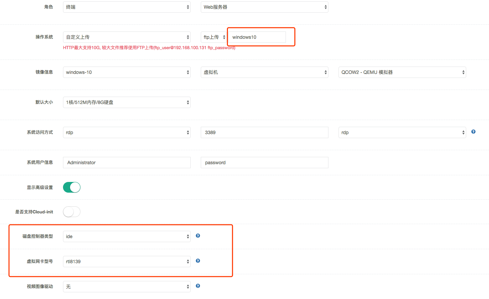

标靶创建
容器（docker）
- 将制作完成的
docker镜像，通过docker save -o命令编译成tar包；
dokcer save ubuntu -O /tmp/ubuntu.tar
-
将编译成功的
tar包下载到本地（简称docker镜像包）； -
使用
admin账号登陆后台页面，点击场景->标靶管理->新增，进入新建标靶页面；
- 通过HTTP或FTP上传
虚拟机

-
对于较大的虚拟机镜像，推荐使用FTP上传
-
上传结束后，在如图所示的位置填入上传的镜像文件名称
-
对于从virtual-box或VMware拷贝过来Windows类型的镜像：
- 磁盘控制器类型 ide
- 虚拟网卡型号 rtl8139
字段说明： - 角色： 选择“终端”，并根据标靶服务信息选择服务器类型；
-
操作系统： 选择“自定义上传”，上传本地保存的docker镜像tar包；
-
镜像信息： 选择docker镜像的系统类型；选择容器，docker-容器镜像；
-
默认大小： 根据docker镜像需求，选择相应的实例类型：
-
系统访问方式： 根据docker提供访问信息填写，若docker禁止访问，保持默认配置；
-
系统用户信息： 根据docker提供的访问用户信息填写，若docker禁止访问，保持默认配置；
FTP上传镜像 - 使用xftp与服务器建立连接。协议：FTP，默认用户名：ftp_user，默认密码：ftp_password
-
将镜像文件拖至右侧窗口
-
等待上传结束
场景创建
- 点击场景->场景管理->新增，进入新建场景页面；

字段说明：
-
名称： 填写场景名称；
-
类型： 默认选择“仿真”类型；
-
场景绘制字段，搜索新增的标靶并拖拽到右侧幕布；
字段说明：
- 节点名称： 即在标靶中添加的元素名称，不建议修改；
- 镜像大小： 根据docker镜像需求的实例类型大小选择；
- 接入方式： 协议（http、nc、ssh、rdp等），协议及端口则是根据docker镜像服务来设置；
- PS： 可以设置多个接入方式，例如ssh开放登录访问，http提供题目访问；
题目创建并关联场景
真实漏洞类型习题新建示例：
- 点击练习题库->真实漏洞->新增，进入新建题目页面；相关字段根据实际情况填写；
- 点击动态答题环境按钮->选择场景->选择新增的场景；（设置关联的场景）
字段说明：
- 附件： 上传题目相关附件；
-
访问模式： 私有 - 做题目的人独享一套环境，私有环境学员可自行选择是否删除；
-
共享： - 所有做题目的人公用一套环境，共享环境学员不可自行删除，系统默认2小时自动释放，学员或教员可手动延长释放时间；
-
动态Flag： 即题目的Flag随机生成，能有效防止学员作弊，如果关闭则需要手动输入Flag;
-
多解模式： 多解模式说明此题有多个flag，解出其中一个flag即解决此题；多个flag之间用“|”隔开，也可以设置1个flag；
-
分步模式： 分步得分模式说明此题有多个flag，必须解决全部的flag才能解决此题； 点击“+”可以添加多个flag，flag的数目不能低于2个；
-
赛题解题： 题目writeup，支持markdown格式；
-
是否显示赛题解题： 默认；
-
是否公开： 控制前台能够访问题目，根据需求设置，默认隐藏状态；
前台场景测试
- 确保新增题目“是否公开”字段为公开；
``
- 确保题目所在的习题集已对相关平台组织结构进行授权；
字段说明：
若题目所在的习题集“授权访问”字段状态为“未授权”，则需要进行授权； 点击“授权访问”字段 “未授权”链接，在授权管理页面根据需求进行授权操作；
- 通过已授权的组织结构用户账号登录平台，点击“练习”->“真实漏洞”，点击新增的题目；
- 检查题目对应的场景、赛题解题，以及其他题目信息是否正常；
注意项
- 容器制作不在文档范围，但对容器的要求是单容器、服务自启动、无环境变量配置等特殊要求；
- 本文档操作指导过程均通过admin账号进行操作，用户实际使用过程，可以通过教员用户进行操作；
- 容器制作请不要设置固定IP地址，IP地址随机分配；